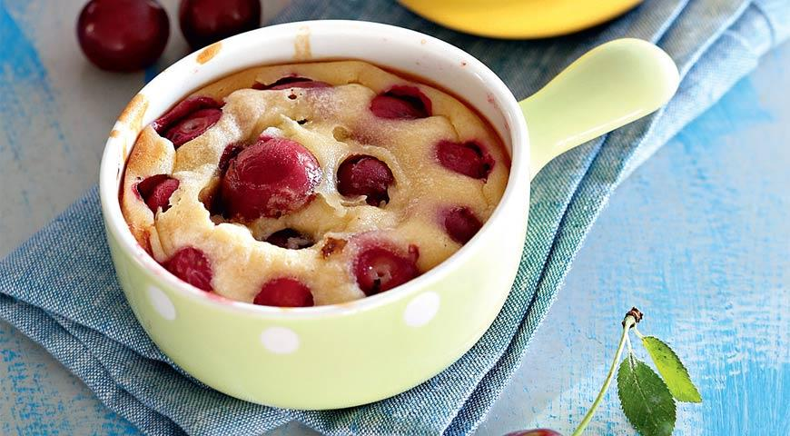

Рататуй
Помню, что когда впервые посмотрел мультик «Рататуй» я сразу же захотел приготовить точно такой же рататуй, который готовил маленький повар-мышонок. В этом рецепте рататуя нет ничего сложного, кроме того, что все овощи необходимо аккуратно порезать и разложить по форме для запекания. Если вас не пугают такие задачи, скорее берите овощи и начинайте готовить ваш самый вкусный рататуй.
Кассуле
Касуле – одно из самых основательных блюд Франции. Оно требует много времени, ингредиентов и, конечно, много гостей. И, как у каждого народного блюда, у касуле множество вариантов. Родиной наваристого рагу является Лангедок. Говорят, что во время Столетней войны горожане решили помочь друг другу выжить. Для этого каждый принес на главную площадь все оставшиеся запасы, и из них сварили в огромном котле наваристое кушанье, которое спасло жителей Лангедока от смерти.
Основное составляющее касуле – это фасоль, причем в оригинале использовалась лима – испанская фасоль. Французы делят касуле на три вида, называя их «Троицей»:
— Касуле-Отец из Кастельнодари – фасоль со свининой, в том числе со шкуркой, а также мясом гуся.
— Касуле-Сын из Каркассона готовится с бараниной.
— Касуле-Дух из Тулузы, для которого также используют небольшое количество баранины, свиного жира, гуся или утки, и самый главный ингредиент – тулузские колбаски.
Нисуаз
Давно мы не делали лёгкие салаты, и хоть сейчас за окном жуткая зима, всё равно хочется радовать себя красками и ароматами. Поэтому сегодня будет Нисуаз — хороший салат на все случаи.

Клафути
Этот десерт из разряда «когда гости на пороге». Всем, кто хочет научиться выпечке, я советую начинать с таких вот рецептов. Этот десерт прост в приготовлении, но выглядит ярко и празднично. Сам пирог очень нежный, а в сочетании с вишней и лимонной цедрой — по-настоящему волшебный. Главный же секрет клафути заключается в простоте. А еще ингредиенты для клафути присутствуют практически на каждой кухне, так что начинайте готовить прямо сейчас.

Луковый суп
Вне всякого сомнения, луковый суп могли придумать только французы. Взять один-единственный (и притом не самый примечательный!) овощ, и полностью раскрыть его характер и вкус, о которых в другом агрегатном состоянии можно лишь догадываться — тут нужно большое мастерство! В результате получается невероятный суп — ароматный, согревающий, чуть сладковатый, и ничуть не «луковый».
Не буду лукавить, рецепт лукового супа имеет свои нюансы, главный из которых — терпение, которое следует проявить при медленном тушении лука: чем дольше это будет происходить, тем лучше получится итоговый результат. По этой причине луковый суп идеально подходит для холодного времени года, когда время, проведённое у плиты за приготовлением густого супа, источающего ароматы по всему дому, не кажется потерянным впустую. Впрочем, даже летом наверняка найдутся любители, которые захотят его приготовить в то время, пока другие будут с нетерпением ждать зимы!
About

Komarov Vlad
Всем привет!Меня зовут Влад,мне 13 лет.Я учусь в Академии ШАГ, моя цель:сделать уникальный,собственный,полезный сайт,и сделать презентацию проекта
Переходите по кнопке